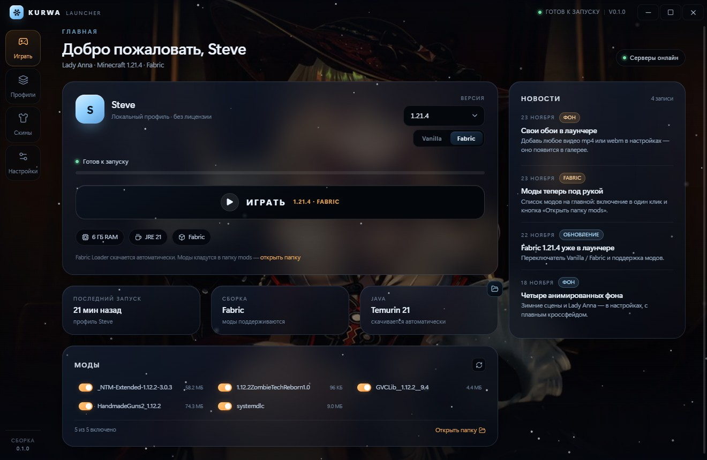
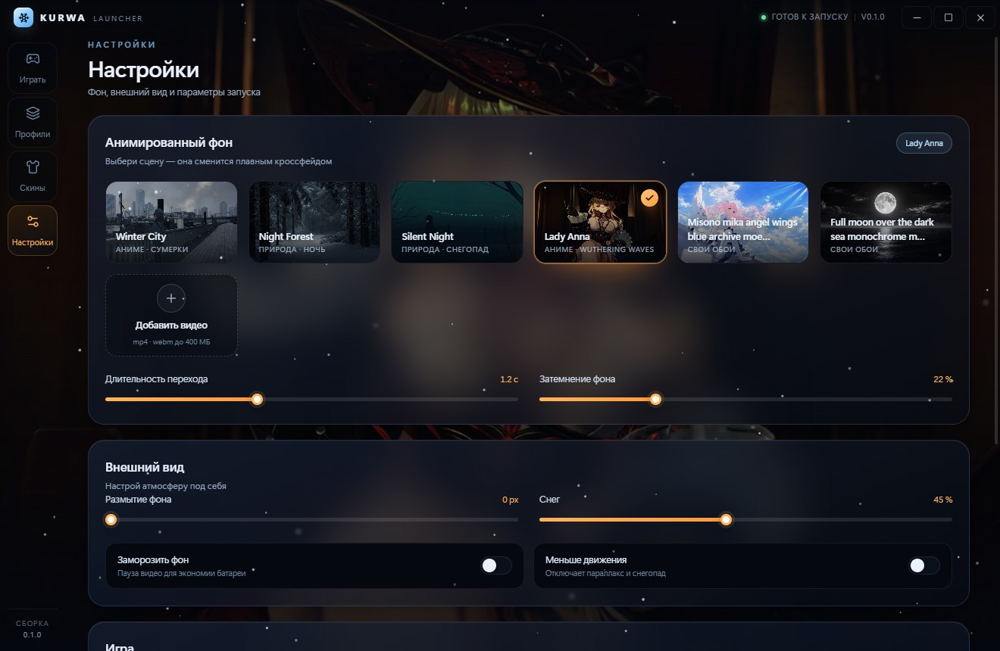

Настоящий запуск
Minecraft 1.21.4 без заглушек: client.jar, библиотеки и ассеты качает
minecraft-launcher-core.
Minecraft 1.21.4 · Vanilla и Fabric
Тёмный лаунчер с живыми фонами, снегом и модами в один клик. Настоящий запуск 1.21.4, Java 21 скачивается сама, профиль работает без лицензии.
Сборка v0.1.0 · Windows 10/11 · Java 21 скачается при первом запуске

Возможности
Никаких десятков кнопок и настроек «как в 2014». Только то, чем реально пользуются.
Minecraft 1.21.4 без заглушек: client.jar, библиотеки и ассеты качает
minecraft-launcher-core.
Список .jar прямо на главной: включил или выключил — и всё.
Папка mods создаётся сама.
Winter City, Night Forest, Silent Night и Lady Anna. Смена — плавным кроссфейдом, длительность настраивается.
Добавь любое видео mp4 или webm до 400 МБ —
лаунчер сам сделает постер и поставит его на фон.
Temurin JRE 21 скачивается в папку лаунчера при первом запуске. Ставить Java вручную не нужно.
Ник и UUID генерируются локально — одиночная игра доступна без Microsoft-аккаунта и лицензии.
Фоны
Живое видео вместо статичной картинки. Нажми на карточку, чтобы посмотреть сцену в движении.
Моды
Скачай .jar с Modrinth или CurseForge, положи в папку
mods — и он появится в лаунчере. Выключается одним кликом,
без переименований вручную.
mods, если её нет
Для модов выбери загрузчик Fabric и версию, под которую собран мод. Сейчас стабильно поддерживается 1.21.4.

Персонализация
Надоели встроенные сцены? В настройках есть плитка «Добавить видео»: выбираешь файл — лаунчер копирует его к себе и делает постер из кадра.
mp4, webm или m4v до 400 МБ
Плюс ползунки затемнения и размытия, интенсивность снега и режим «меньше движения» — чтобы атмосфера не мешала читать интерфейс.
Установка
Никаких зависимостей и ручных настроек Java.
Запусти KurwaLauncher-setup-0.1.0.exe и следуй мастеру.
Ярлык появится на рабочем столе.
Windows может показать «Не удалось проверить издателя» — сборка не подписана. Нажми «Подробнее» → «Выполнить в любом случае».
Выбери версию и загрузчик, нажми «Играть». Java и файлы игры скачаются автоматически.
FAQ
Для одиночной игры — нет. Лаунчер создаёт локальный профиль: ник и UUID генерируются на месте. Для входа на онлайн-серверы нужен лицензионный Microsoft-аккаунт.
У сборки нет платного сертификата подписи кода, поэтому SmartScreen перестраховывается. Это нормально для небольших лаунчеров: «Подробнее» → «Выполнить в любом случае».
Modrinth и CurseForge. Скачай версию под Fabric 1.21.4 и положи
.jar в папку mods — кнопка «Открыть папку» на
главной создаст её и откроет проводник.
По умолчанию 6 ГБ — этого хватает на ваниль и лёгкие моды. Для тяжёлых сборок с шейдерами можно поднять до 8–10 ГБ, если у компьютера есть запас.
Portable — один exe, который запускается без установки. Данные те же:
Java в %APPDATA%\kurwa-launcher, игра в
%APPDATA%\.kurwa. Установщик просто добавляет ярлыки.
Java 21 (Temurin) — в %APPDATA%\kurwa-launcher\jre, игра,
библиотеки и ассеты — в %APPDATA%\.kurwa. Свои обои — в
%APPDATA%\kurwa-launcher\backgrounds.
Готов?
Один клик — и у тебя лаунчер с живыми фонами, модами и настоящим Minecraft 1.21.4.
v0.1.0 · Java 21 скачается автоматически · для одиночной игры лицензия не нужна